Deft 0.2.5
Library, book details and reader settings revised from the complete device feedback. These are local Compose renders; physical-device reading is covered by the test checklist.
Merged M1 library and settings reference
Library
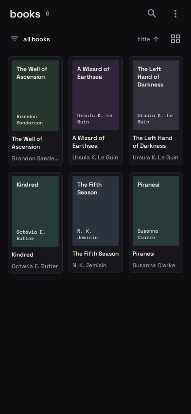
Books grid and title/author search entry.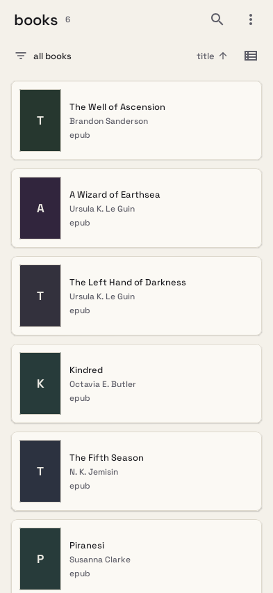
List layout with contained book cards.Advanced search
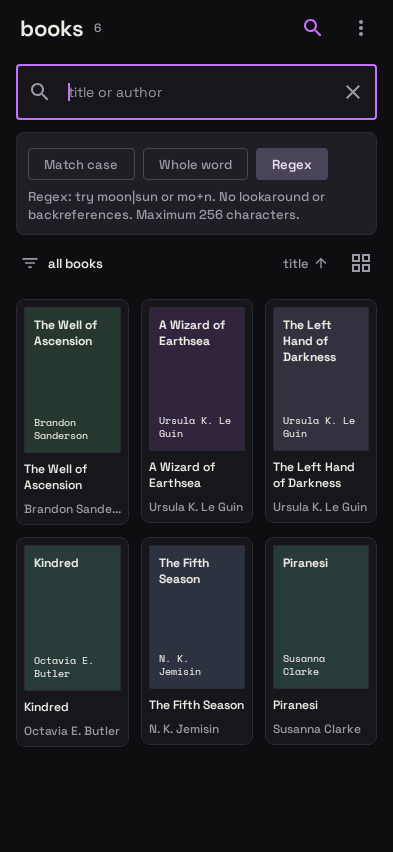
Options and help share an elevated card aligned with the search field.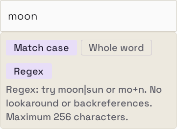
Options remain aligned at large text.Book detail
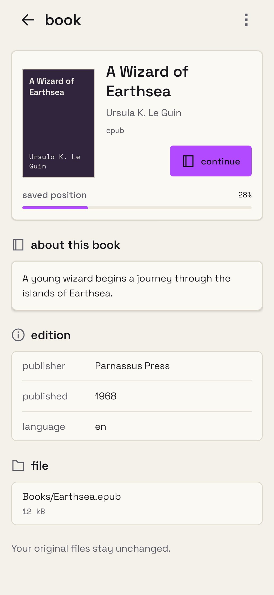
Read/Continue aligns beside the cover; description has its own elevated card.
 Ink theme, 150% system text.
Ink theme, 150% system text.
Reader controls
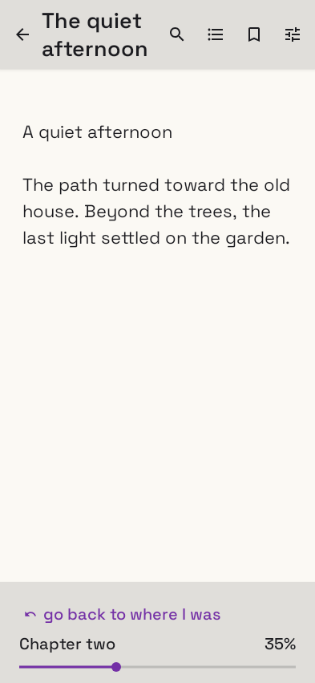
Larger title, centered progress dot and increased chapter spacing at large text. The sample body is a Compose fixture; real EPUB resources are verified separately in Chromium.Native image viewer
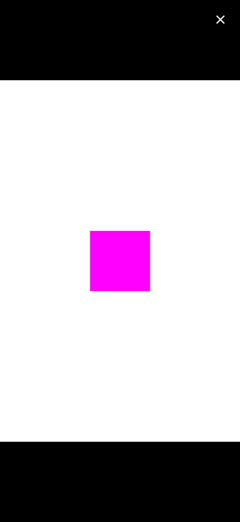
Actual native dialog render of a generated SVG fixture; tests verify colored pixels, pinch, pan and close. The author passed the 0.2.4 image-viewer device retest.Reader settings
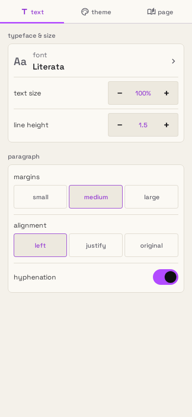
Grouped typography and paragraph controls; icon tabs support horizontal swiping.
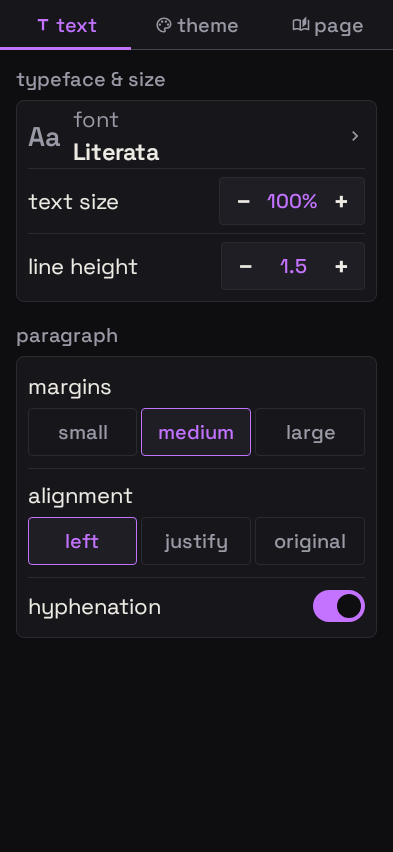
Ink theme, 150% system text.
 Theme swatches and system theme policy.
Theme swatches and system theme policy.
 Tap turns, orientation, startup and fullscreen controls; further reading choices scroll below.
Tap turns, orientation, startup and fullscreen controls; further reading choices scroll below.
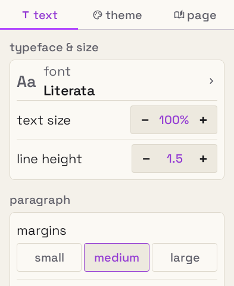
Quick settings, 150% text, internal scrolling.
Settings navigation
 Grouped library and reader navigation.
Grouped library and reader navigation.
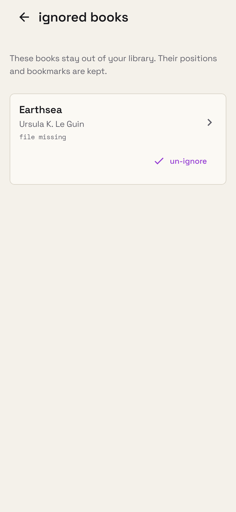
Book identity and restore action remain distinct.
Scan permission
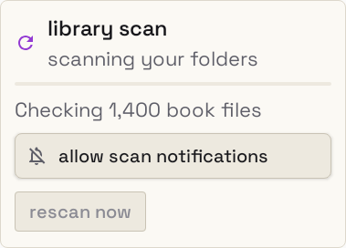
Permission state follows app and scan-channel settings; large text remains readable.Scan notices
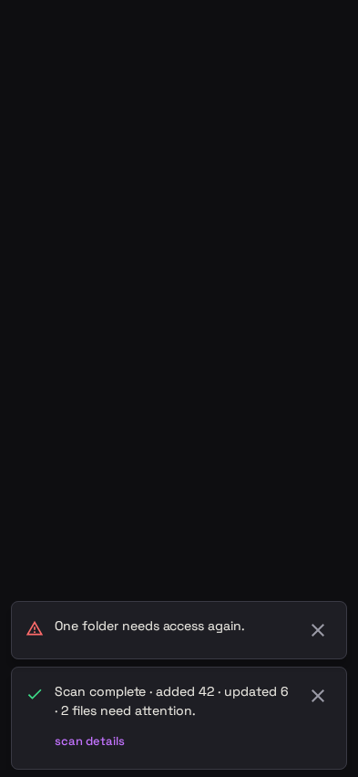
Message and independent dismissal, with details directly beneath completion text.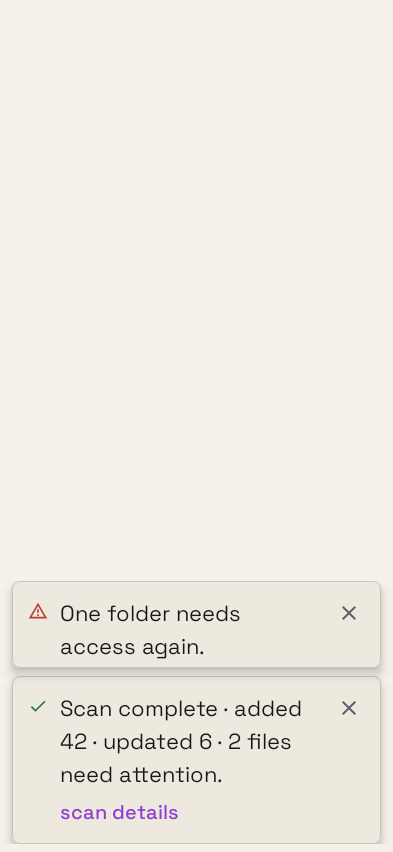
Large text wraps while retaining accessible actions.